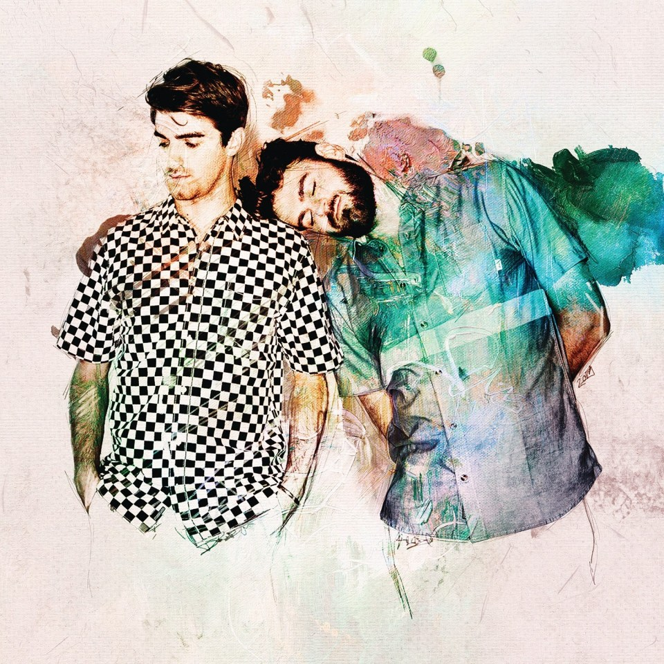
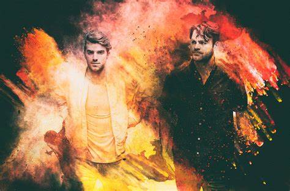

The Chainsmokers is an American electronic DJ and production duo consisting of Alexander "Alex" Pall and Andrew "Drew" Taggart (with Matt McGuire on live shows). They started out by releasing remixes of songs by indie artists. The EDM-pop duo achieved a breakthrough with their 2014 song "#Selfie", which became a top twenty single in several countries. They have won a Grammy award, two American Music Awards, seven Billboard Music Awards and nine iHeartRadio Music Awards. According to Forbes 2019 list of highest paid celebrities, the Chainsmokers were the highest paid DJs, dethroning Calvin Harris after six years. "This 2 man band has become viral for the past decades with their amazing popsongs that ruled the America music culture. Their music brings a special melody and feelings that nobody could get from any other music artists, thus creating a special vibe through their music."
 